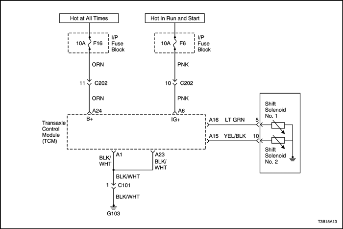

Código de avería (DTC) P0753
Solenoide eléctrico de cambio 1 (SS1)
Condiciones para la activación del DTC
- El TCM detecta la señal de encendido del monitor de solenoide de cambio 1 (SS1) durante 0,5 segundos cuando el controlador del SS1 emite la señal de apagado. (Cuando hay un circuito abierto o cortocircuito a batería en el circuito de SS1).
- El TCM detecta la señal de encendido del monitor de solenoide de cambio 1 (SS1) durante 0,3 segundos cuando el controlador del SS1 emite la señal de apagado. (Cuando hay un cortocircuito a tierra en el circuito de SS1).
- La detección descrita anteriormente se produce 2 veces durante el cambio de forma continuada.
Medida adoptada cuando se activa el DTC
- El TCM solicita el alumbrado del MIL y guarda el DTC cuando el TCM detecta un fallo en el primer ciclo de encendido.
- No hay control de cierre
- No hay control de la reducción de par motor
- No hay control de la presión de embrague
- No hay control del solenoide de sincronización de N-D
- No hay control autoprogramado
- Después de la determinación del fallo: modo de emergencia
El patrón de cambio del TCM (Gama: D)
Normal | FALLO SS1 |
Engranaje | SS1 | SS2 | Engranaje | SS1 | SS2 |
1 st | ON | ON | 3ª | FALLO | OFF |
2ª | ON | OFF | 3ª | FALLO | OFF |
3ª | OFF | OFF | 3ª | FALLO | OFF |
4ª | OFF | ON | 4ª | FALLO | ON |
Condiciones para la desactivación del DTC
- El TCM apaga la MIL cuando no se detecta ningún fallo más en tres ciclos de encendido consecutivos.
- La herramienta de diagnóstico puede borrar el DTC de la memoria del TCM.
- El TCM borra el DTC de la memoria histórica del TCM, después de cuarenta ciclos consecutivos sin falla.
- El TCM detecta la señal de encendido del monitor del SS1 durante 160 ms cuando el controlador del SS1 emite la señal de encendido y el TCM detecta la señal de apagado del monitor del SS1 durante 160 ms cuando el controlador del SS1 emite la señal de apagado.
Causa del fallo
- El mazo de cables o el conector entre el solenoide de cambio 1 (SS1) y el TCM
- SS1
- TCM
DTC P0753 Solenoide 1 de cambios (SS1) Eléctrica
| Paso | Medida | Valor(es) | Sí | No |
| 1 | - Apague el contacto.
- Instale la herramienta de diagnóstico.
- Con el motor apagado, coloque el interruptor de encendido en la posición ON.
- Seleccione Guardar cuadro fijo/registro de fallos del menú de Información sobre códigos de avería.
- Guardar cuadro fijo/registro de fallos.
- Seleccione Borrar información de DTC del menú de Información sobre códigos de avería.
- Borrar información sobre DTC.
- Realice un ciclo de conducción del vehículo.
¿Se enciende la luz indicadora de fallo (MIL)? | - | Vaya a Paso 2 | Repare el fallo de conexión temporal del conector (Consulte "Comprobación del mazo de cables y del conector" en esta misma sección.) |
| 2 | - Seleccione Solicitar DTC según Estado del menú de Información sobre códigos de avería.
- Solicitar DTC según Estado.
¿Se muestra el DTC P0753? | - | Vaya a Paso 3 | Repare el fallo de conexión temporal del conector (Consulte "Comprobación del mazo de cables y del conector" en esta misma sección.) |
| 3 | - Apague el contacto.
- Compruebe la resistencia entre el mazo de cables y el solenoide de cambio 1 (SS1). Consulte "Comprobación de unidad" en esta misma sección.
- Desconecte el conector del TCM (X-1) y compruebe la resistencia entre el terminal A16 y A23.
¿Está el valor medido dentro del rango de valores especificado? | 20°C 11-16 Ω | Vaya a Paso 4 | Vaya a Paso 5 |
| 4 | - Examine el fallo entre el conector del mazo de cables del vehículo y el TCM.
- Compruebe el conector. Consulte "Comprobación del mazo de cables y del conector" en esta misma sección.
- Compruebe el estado de la conexión entre los conectores (C-1).
¿Está la conexión en buen estado? | - | Vaya a Paso 6 | Repare los conectores del mazo de cables. |
| 5 | - Examine el fallo entre el mazo de cables del vehículo y el SS1.
- Desconecte el conector (X-3) del cable de T/M y compruebe la resistencia entre el terminal 5 del conector del SS1 y tierra.
¿Está el valor medido dentro del rango de valores especificado? | 20°C 11-16 Ω | Vaya a Paso 7 | Vaya a Paso 8 |
| 6 | - Sustituya el TCM principal.
- LLeve a cabo la prueba de reproducción en las mismas condiciones del usuario después de confirmar que no se ha mostrado el DTC.
¿Se muestra el DTC? | - | Repare el fallo de conexión temporal del conector (Consulte "Comprobación del mazo de cables y del conector" en esta misma sección.) | Sustituya el TCM |
| 7 | - Examine el fallo del mazo de cables del vehículo o entre los conectores.
- Compruebe la continuidad y si hay algún cortocircuito en el mazo de cables del vehículo y controle el estado de la conexión entre los conectores (C-3). Consulte "Comprobación del mazo de cables y del conector" en esta misma sección.
¿Están en buen estado? | - | Repare el fallo de conexión temporal del conector | Sustituya el mazo de cables del vehículo o el ajuste entre conectores |
| 8 | - Examine el fallo del cable de T/M o entre los conectores del SS1.
- Compruebe el SS1. Consulte "Comprobación de unidad" en esta misma sección.
¿Ha detectado el problema? | - | Sustituya el solenoide del SS1 | Vaya a Paso 9 |
| 9 | - Examine el fallo del cable de T/M.
- Compruebe la continuidad y si hay algún cortocircuito en el cable de T/M y controle el estado de la conexión entre los conectores (C-6). Consulte "Comprobación del mazo de cables y del conector" en esta misma sección.
¿Están en buen estado? | - | Repare el fallo de conexión temporal del conector | Sustituya el cable de T/M o el ajuste entre los conectores |
Código de avería (DTC) P0756
Solenoide de cambio 2 (SS2) atascado en posición de apagado
Condiciones para la activación del DTC
- Solenoide de cambio 2 (SS2) está atascado en la posición de encendido/apagado.
- Gama D seleccionada
- Temperatura normal del agua del motor
- Han transcurrido 20 segundos desde que la caja de cambios se ha colocado en la posición D.
- El régimen del motor es de 600 rpm o superior.
- No hay fallo del sensor de velocidad de salida / sensor de velocidad de entrada / régimen del motor /señal de temperatura del agua / solenoide eléctrico / sensor de gama / señal de mariposa
Medida adoptada cuando se activa el DTC
- El TCM solicita el alumbrado del MIL y guarda el DTC cuando el TCM detecta un fallo en dos ciclos de encendido consecutivos.
Condiciones para la desactivación del DTC
- El TCM apaga la MIL cuando no se detecta ningún fallo más en tres ciclos de encendido consecutivos.
- La herramienta de diagnóstico puede borrar el DTC de la memoria del TCM.
- El TCM borra el DTC de la memoria histórica del TCM, después de cuarenta ciclos consecutivos sin falla.
Causa del fallo
- Solenoide de cambio 2 (SS2)
- Cuerpo de válvula interior
- TCM
DTC P0756 Solenoide 2 de cambios (SS2) atascado en posición de apagado
| Paso | Medida | Valor(es) | Sí | No |
| 1 | - Apague el contacto.
- Instale la herramienta de diagnóstico.
- Con el motor apagado, coloque el interruptor de encendido en la posición ON.
- Seleccione Guardar cuadro fijo/registro de fallos del menú de Información sobre códigos de avería.
- Guardar cuadro fijo/registro de fallos.
- Seleccione Borrar información de DTC del menú de Información sobre códigos de avería.
- Borrar información sobre DTC.
- Lleve a cabo dos ciclos de conducción del vehículo.
¿Se enciende la luz indicadora de fallo (MIL)? | - | Vaya a Paso 2 | Repare el fallo de conexión temporal del conector (Consulte "Comprobación del mazo de cables y del conector" en esta misma sección.) |
| 2 | - Seleccione Solicitar DTC según Estado del menú de Información sobre códigos de avería.
- Solicitar DTC según Estado.
¿Se muestra el DTC P0756? | - | Vaya a Paso 3 | Repare el fallo de conexión temporal del conector (Consulte "Comprobación del mazo de cables y del conector" en esta misma sección.) |
| 3 | - Apague el contacto.
- Sustituya el TCM principal y lleve a cabo una prueba de simulacro de nuevo según las condiciones del usuario.
¿Vuelve a aparecer el DTC P0756? | - | Vaya a Paso 4 | Sustituya el TCM. |
| 4 | - Examine el fallo del solenoide de cambio 2 o el cuerpo de válvula interno.
- Compruebe el SS2. Consulte "Comprobación de unidad" en esta misma sección.
¿Está el SS2 en buen estado? | - | Sustituya el conjunto de cuerpo de válvula. | Sustituya el solenoide de cambio 2 (SS2) |
Código de avería (DTC) P0758
Solenoide eléctrico de cambio 2 (SS2)
Condiciones para la activación del DTC
- El TCM detecta la señal de encendido del monitor de solenoide de cambio 2 (SS2) durante 0,5 segundos cuando el controlador del SS2 emite la señal de apagado. (Cuando hay un circuito abierto o cortocircuito a batería en el circuito de SS2).
- El TCM detecta la señal de encendido del monitor de solenoide de cambio 2 (SS2) durante 0,3 segundos cuando el controlador del SS2 emite la señal de encendido. (Cuando hay un cortocircuito a tierra en el circuito de SS2).
- La detección descrita anteriormente se produce 2 veces durante el cambio de forma continuada.
Medida adoptada cuando se activa el DTC
- El TCM solicita el alumbrado del MIL y guarda el DTC cuando el TCM detecta un fallo en el primer ciclo de encendido.
- No hay control de cierre
- No hay control de la reducción de par motor
- No hay control de la presión de embrague
- No hay control del solenoide de sincronización de N-D
- No hay control autoprogramado
- Después de la determinación del fallo: modo de emergencia
El patrón de cambio del TCM (Gama: D)
Normal | FALLO SS2 |
Engranaje | SS1 | SS2 | Engranaje | SS1 | SS2 |
1 st | ON | ON | 2ª | ON | FALLO |
2ª | ON | OFF | 2ª | ON | FALLO |
3ª | OFF | OFF | 3ª | OFF | FALLO |
4ª | OFF | ON | 3ª | OFF | FALLO |
Condiciones para la desactivación del DTC
- El TCM apaga la MIL cuando no se detecta ningún fallo más en tres ciclos de encendido consecutivos.
- La herramienta de diagnóstico puede borrar el DTC de la memoria del TCM.
- El TCM borra el DTC de la memoria histórica del TCM, después de cuarenta ciclos consecutivos sin falla.
- El TCM detecta la señal de encendido del monitor del SS2 durante 160 ms cuando el controlador del SS2 emite la señal de encendido, y el TCM detecta la señal de apagado del monitor del SS2 durante 160 ms cuando el controlador del SS2 emite la señal de apagado.
Causa del fallo
- El mazo de cables o el conector entre el solenoide de cambio 2 (SS2) y el TCM
- SS2
- TCM
DTC P0758 Solenoide 2 de cambios (SS2) Eléctrica
| Paso | Medida | Valor(es) | Sí | No |
| 1 | - Apague el contacto.
- Instale la herramienta de diagnóstico.
- Con el motor apagado, coloque el interruptor de encendido en la posición ON.
- Seleccione Guardar cuadro fijo/registro de fallos del menú de Información sobre códigos de avería.
- Guardar cuadro fijo/registro de fallos.
- Seleccione Borrar información de DTC del menú de Información sobre códigos de avería.
- Borrar información sobre DTC.
- Realice un ciclo de conducción del vehículo.
¿Se enciende la luz indicadora de fallo (MIL)? | - | Vaya a Paso 2 | Repare el fallo de conexión temporal del conector (Consulte "Comprobación del mazo de cables y del conector" en esta misma sección.) |
| 2 | - Seleccione Solicitar DTC según Estado del menú de Información sobre códigos de avería.
- Solicitar DTC según Estado.
¿Se muestra el DTC P0758? | - | Vaya a Paso 3 | Repare el fallo de conexión temporal del conector (Consulte "Comprobación del mazo de cables y del conector" en esta misma sección.) |
| 3 | - Apague el contacto.
- Compruebe la resistencia entre el mazo de cables y el solenoide de cambio 2 (SS2). Consulte "Comprobación de unidad" en esta misma sección.
- Desconecte el conector del TCM (X-1) y compruebe la resistencia entre el terminal A15 y A23.
¿Está el valor medido dentro del rango de valores especificado? | 20°C 11-16 Ω | Vaya a Paso 4 | Vaya a Paso 5 |
| 4 | - Examine el fallo entre el conector del mazo de cables del vehículo y el TCM.
- Compruebe el conector. Consulte "Comprobación del mazo de cables y del conector" en esta misma sección.
- Compruebe el estado de la conexión entre los conectores (C-1).
¿Está la conexión en buen estado? | - | Vaya a Paso 6 | Repare los conectores del mazo de cables. |
| 5 | - Examine el fallo entre el mazo de cables del vehículo y el SS2.
- Desconecte el conector (X-3) del cable de T/M y compruebe la resistencia entre el terminal 10 del conector del SS2 y tierra.
¿Está el valor medido dentro del rango de valores especificado? | 20°C 11-16 Ω | Vaya a Paso 7 | Vaya a Paso 8 |
| 6 | - Sustituya el TCM principal.
- LLeve a cabo la prueba de reproducción en las mismas condiciones del usuario después de confirmar que no se ha mostrado el DTC.
¿Se muestra el DTC? | - | Repare el fallo de conexión temporal del conector (Consulte "Comprobación del mazo de cables y del conector" en esta misma sección.) | Sustituya el TCM |
| 7 | - Examine el fallo del mazo de cables del vehículo o entre los conectores.
- Compruebe la continuidad y si hay algún cortocircuito en el mazo de cables del vehículo y controle el estado de la conexión entre los conectores (C-3). Consulte "Comprobación del mazo de cables y del conector" en esta misma sección.
¿Están en buen estado? | - | Repare el fallo de conexión temporal del conector | Sustituya el mazo de cables del vehículo o el ajuste entre conectores |
| 8 | - Examine el fallo del cable de T/M o entre los conectores del SS2.
- Compruebe el SS2. Consulte "Comprobación de unidad" en esta misma sección.
¿Ha detectado el problema? | - | Sustituya el solenoide del SS2 | Vaya a Paso 9 |
| 9 | - Examine el fallo del cable de T/M.
- Compruebe la continuidad y si hay algún cortocircuito en el cable de T/M y controle el estado de la conexión entre los conectores (C-6). Consulte "Comprobación del mazo de cables y del conector" en esta misma sección.
¿Están en buen estado? | - | Repare el fallo de conexión temporal del conector | Sustituya el cable de T/M o el ajuste entre los conectores |

Código de avería (DTC) P1701
Error en señal de temperatura de refrigerante del motor (ECT)
Condiciones para la activación del DTC
- El TCM detecta un fallo de funcionamiento de la señal de temperatura de refrigerante del motor (ECT) durante 2 segundos de forma continuada.
- No hay DTC U2105
Medida adoptada cuando se activa el DTC
- El TCM no solicita el alumbrado del MIL, pero guarda el DTC cuando el TCM detecta un fallo en el primer ciclo de encendido.
- El TCM determina que la temperatura de refrigerante del motor es de 90 grados cuando han transcurrido 15 minutos desde que el encendido se ha colocado en la posición ON.
Condiciones para la desactivación del DTC
- La herramienta de diagnóstico puede borrar el DTC de la memoria del TCM.
- El TCM borra el DTC de la memoria histórica del TCM, después de cuarenta ciclos consecutivos sin falla.
Causa del fallo
- El mazo de cables o el conector entre el ECM y el TCM
- ECM
- TCM
DTC P1701 Error en señal de temperatura de refrigerante del motor (ECT)
| Paso | Medida | Valor(es) | Sí | No |
| 1 | - Apague el contacto.
- Instale la herramienta de diagnóstico.
- Con el motor apagado, coloque el interruptor de encendido en la posición ON.
- Seleccione Borrar información de DTC del menú de Información sobre códigos de avería.
- Borrar información sobre DTC.
- Realice un ciclo de conducción del vehículo.
- Seleccione Solicitar DTC según Estado del menú de Información sobre códigos de avería.
- Solicitar DTC según Estado.
¿Se muestra el DTC P1701? | - | Vaya a Paso 2 | Repare el fallo de conexión temporal del conector. |
| 2 | - Apague el contacto.
- Desconecte el mazo de cables del TCM y el mazo de cables del ECM.
- Mida la resistencia entre el terminal A17 del conector de cableado del TCM y el terminal K14 (88) del conector de cableado del ECM.
- Mida la resistencia entre el terminal A7 del conector de cableado del TCM y el terminal K15 (57) del conector de cableado del ECM.
¿Queda la resistencia entre los valores mostrados? | 0 Ω | Vaya a Paso 4 | Vaya a Paso 3 |
| 3 | Repare los terminales que presentan fallos si fuera necesario. ¿Se ha completado esta medida? | - | Sistema OK | - |
| 4 | - Encienda el contacto.
- Mida el voltaje del terminal A17.
- Mida el voltaje del terminal A7.
¿Queda el voltaje dentro de los valores mostrados? | 11-14 v | Vaya a Paso 5 | Vaya a Paso 6 |
| 5 | Repare los terminales que presentan fallos si fuera necesario. ¿Se ha completado esta medida? | - | Sistema OK | - |
| 6 | - Sustituya el TCM.
- Apague el contacto.
- Encienda el contacto.
- Compruebe si el DTC P1701 está activado.
¿Está activado el DTC? | - | Vaya a Paso 7 | Vaya a Paso 8 |
| 7 | Sustituya el ECM. ¿Se ha completado esta medida? | - | Vaya a Paso 8 | - |
| 8 | - Tras la reparación, utilice la función "borrar info" dela herramienta de diagnóstico y realice una prueba de rodaje del vehículo.
- Revise la "Info DTC".
¿Ha fallado la última prueba o se visualiza el DTC actual? | - | Vuelva a iniciar el diagnóstico | Repare la tabla del DTC de salida verificada |
Código de avería (DTC) P1702
Error en señal de par motor
Condiciones para la activación del DTC
- El TCM detecta un fallo de funcionamiento en la señal de velocidad del motor durante 2 segundos.
- No hay DTC U2105
Medida adoptada cuando se activa el DTC
- El TCM solicita el alumbrado del MIL y guarda el DTC cuando el TCM detecta un fallo en el primer ciclo de encendido.
- No hay control de la reducción de par motor
- No hay control de la presión de embrague
- No hay marcha 4ª
- No hay control autoprogramado
Condiciones para la desactivación del DTC
- El TCM apaga la MIL cuando no se detecta ningún fallo más en tres ciclos de encendido consecutivos.
- La herramienta de diagnóstico puede borrar el DTC de la memoria del TCM.
- El TCM borra el DTC de la memoria histórica del TCM, después de cuarenta ciclos consecutivos sin falla.
Causa del fallo
- El mazo de cables o el conector entre el ECM y el TCM
- ECM
- TCM
DTC P1702 Error en la señal de par del motor
| Paso | Medida | Valor(es) | Sí | No |
| 1 | - Apague el contacto.
- Instale la herramienta de diagnóstico.
- Con el motor apagado, coloque el interruptor de encendido en la posición ON.
- Seleccione Guardar cuadro fijo/registro de fallos del menú de Información sobre códigos de avería.
- Guardar cuadro fijo/registro de fallos.
- Seleccione Borrar información de DTC del menú de Información sobre códigos de avería.
- Borrar información sobre DTC.
- Realice un ciclo de conducción del vehículo.
¿Se enciende la luz indicadora de fallo (MIL)? | - | Vaya a Paso 2 | Repare el fallo de conexión temporal del conector. |
| 2 | - Seleccione Solicitar DTC según Estado del menú de Información sobre códigos de avería.
- Solicitar DTC según Estado.
¿Se muestra el DTC P1702? | - | Vaya a Paso 3 | Repare el fallo de conexión temporal del conector. |
| 3 | - Apague el contacto.
- Desconecte el mazo de cables del TCM y el mazo de cables del ECM.
- Mida la resistencia entre el terminal A17 del conector de cableado del TCM y el terminal K14 (88) del conector de cableado del ECM.
- Mida la resistencia entre el terminal A7 del conector de cableado del TCM y el terminal K15 (57) del conector de cableado del ECM.
¿Queda la resistencia entre los valores mostrados? | 0 Ω | Vaya a Paso 5 | Vaya a Paso 4 |
| 4 | Repare los terminales que presentan fallos si fuera necesario. ¿Se ha completado esta medida? | - | Sistema OK | - |
| 5 | - Encienda el contacto.
- Mida el voltaje del terminal A17.
- Mida el voltaje del terminal A7.
¿Queda el voltaje dentro de los valores mostrados? | 11-14 v | Vaya a Paso 6 | Vaya a Paso 7 |
| 6 | Repare los terminales que presentan fallos si fuera necesario. ¿Se ha completado esta medida? | - | Sistema OK | - |
| 7 | - Inspeccione la "Velocidad del motor". Consulte la Sección 1F, Información y procedimientos de diagnóstico del motor.
¿Se ha hallado algún problema? | - | Consulte la Sección 1F, Información y procedimientos de diagnóstico del motor. | Vaya a Paso 8 |
| 8 | - Sustituya el TCM.
- Apague el contacto.
- Encienda el contacto.
- Compruebe si el DTC P1702 está activado.
¿Está activado el DTC? | - | Vaya a Paso 9 | Vaya a Paso 10 |
| 9 | Sustituya el ECM. ¿Se ha completado esta medida? | - | Vaya a Paso 10 | - |
| 10 | - Tras la reparación, utilice la función "borrar info" dela herramienta de diagnóstico y realice una prueba de rodaje del vehículo.
- Revise la "Info DTC".
¿Ha fallado la última prueba o se visualiza el DTC actual? | - | Vuelva a iniciar el diagnóstico | Repare la tabla del DTC de salida verificada |
 | |  | |
| © Copyright Chevrolet Europe. Reservados todos los derechos |